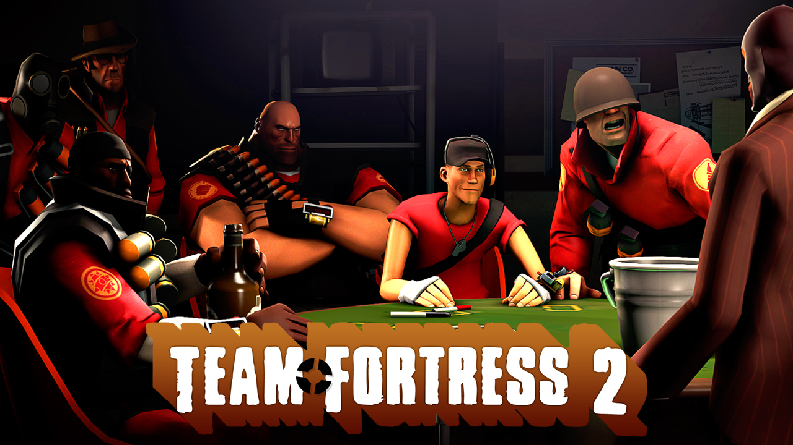
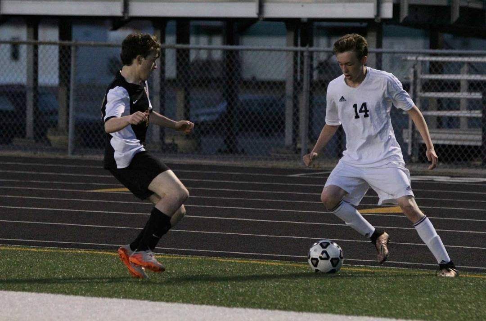

Gaming
Playing video games is one of my favorite things to do in my freetime. Of the games I play, a select few stand out as my favorites of all team. In particular, Team Fortress 2 is probably my favorite. I started playing in 2012, when my cousin introduced me to the game. Ever since then, it has become my most played game. I even competed in competitive leagues.
TF2 UGC Match Stats
| Match Result | Class | Kills | Assists | Deaths |
|---|---|---|---|---|
| Draw 4-4 | Scout | 19 | 10 | 19 |
| Loss 1-4 | Scout | 21 | 7 | 24 |
| Win 4-0 | Scout | 18 | 8 | 8 |
| Loss 1-3 | Scout | 37 | 6 | 24 |
Other Games
The game that stands out almost as much as TF2 is Fallout. Fallout is very unique, set in a post=apocalyptic, alternate version of reality. After playing Fallout: New Vegas in 2013, I was hooked on the series and always looking for more.
Soccer
I started playing soccer in my freshman year of highschool. Before I was confident trying out for the highschool team, I played a season of indoor soccer with a lot of my friends from class. Our team did very well, and we had a lot of fun doing so. This experience in particular grew my love for soccer. After that playing indoor, I tried out for the highschool team and quickly became a second string player. As of my sophomore year, I was already on the starting team. This inspired me to try and become one of the most impactful players on the team. I went on to play soccer in a select division, and this helped me grow further.
Music
Some of my favorite songs